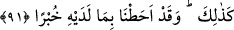

kendilerine ait bir dehlize soktular. Gün yükselince denize çıktılar, balığı avlayıp
güneşe karşı koyup kızarttılar.
Süheylî şöyle der: “Onlar Cablak ehlidir. Orası on bin kapısı olan bir şehirdir. Her
iki kapı arası bir fersahtır. Süryânice’de ona Merkayşa/Merkışa denilir. Onlar, Âd
kavminden Hud (a.s.)’a inanan mü’minlerin neslindendir. Cablak ehli Rasûlullah
(s.a.)’e mi‘rac gecesinde îman etmişlerdi. Cablaklıların ötesinde de bir takım milletler
vardı. Onlar Vesâkil ve Fâris neslindendir. Onlar Hz. Peygamber (s.a.)’e îman
etmemişlerdi.”
et-Te’vîlâtü’n-Necmiyye’de şöyle der: “Âyette bu âlemin sebepler âlemi olduğuna
işaret vardır. Bu âlemde hiçbir kimse herhangi bir şeye veya maksada ancak Allah’ın
imkan vermesi ve bunlara onu ulaştıran bir sebep yaratıp o sebebe tâbi olma konusunda
da onu muvaffak kılması ile olur. İşte Zülkarneyn (a.s.) güneşin doğduğu ve battığı yere
bu sebebe tâbi olarak ulaşmıştır.”
91. İşte böylece onunla ilgili her şeyden haberdardık.
“İşte böylece” Yâni sana anlattığımız gibi Zülkarneyn (a.s.)’ın bu yüksek mevkiini,
mülkünün genişliğini veya batı ehli konusunda Allah’ın onu muhayyer bırakması ve
kendi ihtiyârı ile hareket etmesi gibi güneşin doğduğu yerdekiler hakkındaki muâmelesi
de böyledir. Kâşifî der ki: “İskender batı halkına yaptıklarını onlara da yaptı. Oradan
sol bölge tarafına gitti. “Te’vil kavmi” denilen bir kavme ulaştı. Onlara ibâdet yolunu
gösterdi.”
“Onunla ilgili” daha nice görünen ve görünmeyen sebep, kuvvet ve hazırlıklardan
“her şeyden haberdardık.” Yâni, Zülkarneyn (a.s.)’ın emrine verilen bütün sebep ve
kuvvetlerin çokluğunu; sâdece her şeyden haberdâr olan, işlerin inceliklerini ve sırlarını
bilen Latîf ve Habîr sıfatları ile muttasıf olan Allah bilir. Allah Teâlâ’nın kullarından
dilediğine lütfunun ve imdâdının ne kadar geniş olduğuna bir bak.
Vehb b. Münebbih der ki: “Zülkarneyn İskenderiyye ehlindendi. Başka çocuğu
olmayan ihtiyar bir kadının oğluydu. Kavminden ayrılmıştı. Haseb ve neseb yönünden
onların en üstünü de değildi. Ancak çocukluğundan beri iffet, hilim, mürüvvet ve diğer
güzel huylarla yetişip büyümüştü. O, bu ahlâkî güzelliklerle olgunlaşmaya devam etti,
makbul ve iyi işlerde yükseldi ve nihâyet kavmi arasında şânı ve şöhreti arttı. Allah da
ona heybet ihsân etti. Sonra işi daha da ilerledi ve kendi kendine bazı şeylere karar
verdi. Kendisi hakkındaki ilk kararı İslâm’a girmek oldu ve müslüman oldu. Sonra
kavmini İslâm’a çağırdı. Onlar da kabul ederek baştan sona müslüman oldular. Sonra
O’nunla ilgili zikredilen şeyler meydana geldi.”
İskender’e: “Doğuyu ve batıyı ne ile tuttun ki senden önceki meliklerin hazînesi ve